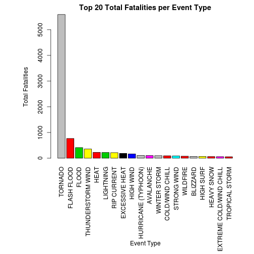
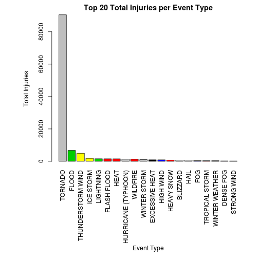
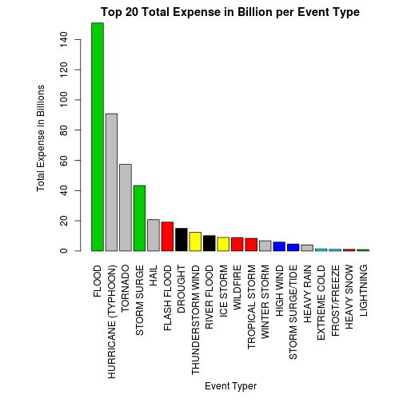

In this report we try to show which storm and weather have a greater impact on the public health and economic consequences for communties and muncipalities. Inorder to investigate this hypothesis we have gathered the data from U.S. National Oceanic and Atmospheric Administration's (NOAA) storm database. The events in the database start in the year 1950 and end in November 2011. This database tracks characteristics of major storms and weather events in the United States, including when and where they occur, as well as estimates of any fatalities, injuries, and property damage. From this data taking the top 20 events, we found Tornado's are major danger to public health as it results in more fatalities and Injuries. Flood's on the other hand have major impact on economic consequences.
set global cache options for R
# set global options
opts_chunk$set(echo = TRUE, cache = TRUE, message = FALSE)
define a name for the bzip file and download the file
bzFilename <- "stomdata.bz2"
fileUrl <- "https://d396qusza40orc.cloudfront.net/repdata%2Fdata%2FStormData.csv.bz2"
download.file(fileUrl, destfile = bzFilename, method = "curl")
load the data into a data variable by reading the download file using read.csv with a field seperator “,” and quote character “\”“, but we need to bzfile before passing it to read.csv function
# read data
data <- read.csv(bzfile(bzFilename), sep = ",", quote = "\"")
# print the column names
colnames(data)
## [1] "STATE__" "BGN_DATE" "BGN_TIME" "TIME_ZONE" "COUNTY"
## [6] "COUNTYNAME" "STATE" "EVTYPE" "BGN_RANGE" "BGN_AZI"
## [11] "BGN_LOCATI" "END_DATE" "END_TIME" "COUNTY_END" "COUNTYENDN"
## [16] "END_RANGE" "END_AZI" "END_LOCATI" "LENGTH" "WIDTH"
## [21] "F" "MAG" "FATALITIES" "INJURIES" "PROPDMG"
## [26] "PROPDMGEXP" "CROPDMG" "CROPDMGEXP" "WFO" "STATEOFFIC"
## [31] "ZONENAMES" "LATITUDE" "LONGITUDE" "LATITUDE_E" "LONGITUDE_"
## [36] "REMARKS" "REFNUM"
# print the first few rows
head(data, 2)
## STATE__ BGN_DATE BGN_TIME TIME_ZONE COUNTY COUNTYNAME STATE
## 1 1 4/18/1950 0:00:00 0130 CST 97 MOBILE AL
## 2 1 4/18/1950 0:00:00 0145 CST 3 BALDWIN AL
## EVTYPE BGN_RANGE BGN_AZI BGN_LOCATI END_DATE END_TIME COUNTY_END
## 1 TORNADO 0 0
## 2 TORNADO 0 0
## COUNTYENDN END_RANGE END_AZI END_LOCATI LENGTH WIDTH F MAG FATALITIES
## 1 NA 0 14 100 3 0 0
## 2 NA 0 2 150 2 0 0
## INJURIES PROPDMG PROPDMGEXP CROPDMG CROPDMGEXP WFO STATEOFFIC ZONENAMES
## 1 15 25.0 K 0
## 2 0 2.5 K 0
## LATITUDE LONGITUDE LATITUDE_E LONGITUDE_ REMARKS REFNUM
## 1 3040 8812 3051 8806 1
## 2 3042 8755 0 0 2
Filter and include only the values for the columns FATALITIES , INJURIES, PROPDMG and CROPDMG when the values are greater than zero
m <- subset(data, FATALITIES > 0 | INJURIES > 0 | PROPDMG > 0 | CROPDMG > 0)
Convert all the values in EVTYPE column to upper case to clean the data
m[, c("EVTYPE")] <- toupper(m[, c("EVTYPE")])
Clean most of the values by correcting and converting them to the event types as described in https://d396qusza40orc.cloudfront.net/repdata%2Fpeer2_doc%2Fpd01016005curr.pdf. so most of the identical event types are grouped together
m[m$EVTYPE == "AVALANCE", c("EVTYPE")] <- "AVALANCHE"
m[grep("BLIZZARD*", m$EVTYPE), c("EVTYPE")] <- "BLIZZARD"
m[grep("HAIL*", m$EVTYPE), c("EVTYPE")] <- "HAIL"
m[grep("HEAVY RAIN*", m$EVTYPE), c("EVTYPE")] <- "HEAVY RAIN"
m[grep("WATERSPOUT*", m$EVTYPE), c("EVTYPE")] <- "WATERSPOUT"
m[grep("HURRICANE*", m$EVTYPE), c("EVTYPE")] <- "HURRICANE"
m[grep("THUNDERSTORM*|TUNDERSTORM WIND*|TSTM WIND*|THUDERSTORM WINDS*", m$EVTYPE),
c("EVTYPE")] <- "THUNDERSTORM WIND"
m[grep("THUNDEERSTORM WINDS*", m$EVTYPE), c("EVTYPE")] <- "THUNDERSTORM WIND"
m[grep("THUNDERESTORM WINDS*", m$EVTYPE), c("EVTYPE")] <- "THUNDERSTORM WIND"
m[grep("THUNDERTORM WINDS*", m$EVTYPE), c("EVTYPE")] <- "THUNDERSTORM WIND"
m[grep("THUNERSTORM WINDS*", m$EVTYPE), c("EVTYPE")] <- "THUNDERSTORM WIND"
m[grep("THUNDERSTROM WIND*", m$EVTYPE), c("EVTYPE")] <- "THUNDERSTORM WIND"
m[grep("THUNDERSTROM WIND*", m$EVTYPE), c("EVTYPE")] <- "THUNDERSTORM WIND"
m[grep("TSTMW*", m$EVTYPE), c("EVTYPE")] <- "THUNDERSTORM WIND"
m[grep("TORNADO*", m$EVTYPE), c("EVTYPE")] <- "TORNADO"
m[grep("TORNDAO*", m$EVTYPE), c("EVTYPE")] <- "TORNADO"
m[grep("RIP CURRENT*", m$EVTYPE), c("EVTYPE")] <- "RIP CURRENT"
m[grep("STRONG WIND*", m$EVTYPE), c("EVTYPE")] <- "STRONG WIND"
m[grep("LIGHTNING*", m$EVTYPE), c("EVTYPE")] <- "LIGHTNING"
m[grep("LIGHTING*|LIGNTNING*", m$EVTYPE), c("EVTYPE")] <- "LIGHTNING"
m[grep("FLASH FLOOD*", m$EVTYPE), c("EVTYPE")] <- "FLASH FLOOD"
m[grep("WINTER WEATHER*", m$EVTYPE), c("EVTYPE")] <- "WINTER WEATHER"
m[grep("WINTER STORM*", m$EVTYPE), c("EVTYPE")] <- "WINTER STORM"
m[grep("TROPICAL STORM*", m$EVTYPE), c("EVTYPE")] <- "TROPICAL STORM"
m[grep("HEAVY SNOW*", m$EVTYPE), c("EVTYPE")] <- "HEAVY SNOW"
m[grep("HEAVY RAIN*|HVY RAIN*", m$EVTYPE), c("EVTYPE")] <- "HEAVY RAIN"
m[grep("FLOOD/FLASH*|FLOOD FLASH*", m$EVTYPE), c("EVTYPE")] <- "FLASH FLOOD"
m[grep("FLOODING|FLOOD/RIVER FLOOD|FLOODS|FLOOD/RAIN/WINDS", m$EVTYPE), c("EVTYPE")] <- "FLOOD"
m[grep("WILDFIRES*|WILD FIRES*|WILDFIRE*|WILD/FOREST*", m$EVTYPE), c("EVTYPE")] <- "WILDFIRE"
m[grep("HURRICANE*|TYPHOON*", m$EVTYPE), c("EVTYPE")] <- "HURRICANE (TYPHOON)"
Creating a marginal data frame for expense conversion to billions taking billion as base line 0 becomes 1e-9 in terms of billions, 1 becomes 1e-8 in terms of billions and so on and similarly for k the value is 1e-6 in terms of billions, for h the value is 1e-7 in terms of billions and for m the value is 1e-3 in terms of billions
mag <- c(0, 1, 2, 3, 4, 5, 6, 7, 8, 9, "k", "K", "m", "M", "b", "B", "h", "H")
magv <- c(1e-09, 1e-08, 1e-07, 1e-06, 1e-05, 1e-04, 0.001, 0.01, 0.1, 1, 1e-06,
1e-06, 0.001, 0.001, 1, 1, 1e-07, 1e-07)
magdf <- data.frame(mag = mag, magv = magv)
Converting the factor values in CROPDMGEXP and PROPDMGEXP to values using the marginal dataframe and adding the columns CROPDMGEXPV and PROPDMGEXP
cb <- subset(m, m$PROPDMGEXP %in% magdf$mag | m$CROPDMGEXP %in% magdf$mag)
cb$CROPDMGEXPV <- sapply(cb$CROPDMGEXP, function(x) {
if (x %in% magdf$mag)
magdf[mag == x, 2] else 0
})
cb$PROPDMGEXPV <- sapply(cb$PROPDMGEXP, function(x) {
if (x %in% magdf$mag)
magdf[mag == x, 2] else 0
})
Adding the values (CROPDMG * CROPDMGEXPV) and (PROPDMG * PROPDMGEXPV) to create TOTLEXP column
cb <- transform(cb, TOTLEXP = CROPDMG * CROPDMGEXPV + PROPDMG * PROPDMGEXPV)
The most harmful events to population health can be assessed by taking the top twenty event types for fatalities and injuries
We calculate the total fatalities for each event type
tf <- tapply(cb$FATALITIES, cb$EVTYPE, sum)
# creating a data frame which we can use
tfdf <- data.frame(eventtype = names(tf), fat = as.numeric(tf))
# order by fatalities descending
tfdf <- tfdf[order(tfdf$fat, decreasing = TRUE), ]
# take top 20
tfdf <- tfdf[1:20, ]
print(tfdf)
## eventtype fat
## 168 TORNADO 5591
## 42 FLASH FLOOD 768
## 43 FLOOD 413
## 167 THUNDERSTORM WIND 357
## 66 HEAT 227
## 115 LIGHTNING 222
## 135 RIP CURRENT 216
## 33 EXCESSIVE HEAT 188
## 84 HIGH WIND 166
## 96 HURRICANE (TYPHOON) 109
## 6 AVALANCHE 103
## 192 WINTER STORM 100
## 18 COLD/WIND CHILL 94
## 165 STRONG WIND 91
## 186 WILDFIRE 79
## 8 BLIZZARD 70
## 79 HIGH SURF 70
## 74 HEAVY SNOW 64
## 38 EXTREME COLD/WIND CHILL 60
## 170 TROPICAL STORM 56
We create a barplot showing the top 20 fatalities
par(mar = c(13, 7, 2, 2), las = 3)
barplot(tfdf$fat, names.arg = tfdf$eventtype, col = tfdf$eventtype, ylab = "Total Fatalities",
main = "Top 20 Total Fatalities per Event Type")
title(xlab = "Event Type", line = 11)

We calculate the total injuries for each event type
inj <- tapply(cb$INJURIES, cb$EVTYPE, sum)
# creating a data frame which we can use
injdf <- data.frame(eventtype = names(inj), inju = as.numeric(inj))
# order by fatalities descending
injdf <- injdf[order(injdf$inju, decreasing = TRUE), ]
# take top 20
injdf <- injdf[1:20, ]
print(injdf)
## eventtype inju
## 168 TORNADO 90472
## 43 FLOOD 6754
## 167 THUNDERSTORM WIND 4977
## 103 ICE STORM 1847
## 115 LIGHTNING 1599
## 42 FLASH FLOOD 1570
## 66 HEAT 1554
## 96 HURRICANE (TYPHOON) 1328
## 186 WILDFIRE 1328
## 192 WINTER STORM 1059
## 33 EXCESSIVE HEAT 949
## 84 HIGH WIND 927
## 74 HEAVY SNOW 787
## 8 BLIZZARD 779
## 64 HAIL 720
## 44 FOG 455
## 170 TROPICAL STORM 380
## 193 WINTER WEATHER 374
## 22 DENSE FOG 254
## 165 STRONG WIND 246
We create a barplot showing the top 20 fatalities
par(mar = c(13, 7, 2, 2), las = 3)
barplot(injdf$inju, names.arg = injdf$eventtype, col = injdf$eventtype, ylab = "Total Injuries",
main = "Top 20 Total Injuries per Event Type")
title(xlab = "Event Type", line = 11)

From this fatalities graph and injuries graph it shows TORNADO's have a great impact on the population health
First we group the total exp (CROPEXP * CROPDMG+ PROPEXP * PROPDMG) by event type and order the rows by exp decreasing and take the top 20 events that contributed to more economic consequences. There is a caveat here I haven't considered the deflation of money across the years
ae <- tapply(cb$TOTLEXP, cb$EVTYPE, sum)
# creating a data frame which we can use
aedf <- data.frame(eventtype = names(ae), exp = as.numeric(ae))
# order by expense descending
aedf <- aedf[order(aedf$exp, decreasing = TRUE), ]
# take top 20
aedf <- aedf[1:20, ]
print(aedf)
## eventtype exp
## 43 FLOOD 150.8907
## 96 HURRICANE (TYPHOON) 90.8725
## 168 TORNADO 57.3671
## 163 STORM SURGE 43.3235
## 64 HAIL 20.7372
## 42 FLASH FLOOD 19.1215
## 25 DROUGHT 15.0187
## 167 THUNDERSTORM WIND 12.3470
## 137 RIVER FLOOD 10.1484
## 103 ICE STORM 8.9670
## 186 WILDFIRE 8.8943
## 170 TROPICAL STORM 8.4093
## 192 WINTER STORM 6.7819
## 84 HIGH WIND 5.9086
## 164 STORM SURGE/TIDE 4.6420
## 72 HEAVY RAIN 4.0443
## 37 EXTREME COLD 1.3807
## 53 FROST/FREEZE 1.1047
## 74 HEAVY SNOW 1.0812
## 115 LIGHTNING 0.9475
Now we create a bar graph showing the top events that caused great economic sequences
par(mar = c(13, 7, 2, 2), las = 3)
barplot(aedf$exp, names.arg = aedf$eventtype, col = aedf$eventtype, ylab = "Total Expense in Billions",
main = "Top 20 Total Expense in Billion per Event Type")
title(xlab = "Event Typer", line = 11)

From the graph its clear that FLOOD's have a great economic consequence